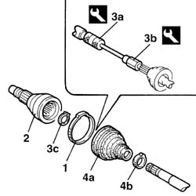

2710A20 Wheel side CONSTANT VELOCITY JOINT (one), left or right - R.R. with driveshaft removed including replacing boot
- Path
- Procedures > 27 AXLE > 2710 FRONT AXLE > 2710A DRIVESHAFTS AND JOINTS > 2710A20 Wheel side CONSTANT VELOCITY JOINT (one), left or right - R.R. with driveshaft removed including replacing boot
- Kind
- repair procedure (removal / refitting; the operation number is the code)
- Applies to
- all engines; all production periods
- Interactive page
- https://sloeber94.github.io/elrnDB-lThss/en/#/78457
Applies to: all engines; all production periods
 Removing
Removing
 Refitting
Refitting- Position the driveshaft in a vice
1. Remove the retaining band and move the protective boot back.
2. Remove the constant velocity joint from the driveshaft.
3. Clean the grease from the inner area housing the bearing then, using tools (3a) and (3b) and pliers on the circlip inside the joint simultaneously, remove the constant velocity joint bearing retaining ring (3c).
4. Then remove the protective gaiter (4a) by removing the retaining band (4b).
 | Description | Code | Function |
|---|---|---|---|
3a | Mallet | 1.847.017.001 | Removing wheel side sliding joint |
| Description | Code | Function |
|---|---|---|---|
3b | Adapator | 1.860.889.000 | Adapator for removing sliding joint |

Applies to: all engines; all production periods
Refitting
Removing- Check that the driveshaft is not distorted or off centre in the area where the joint is fitted and that the area in contact with the seal is not worn.
- Position the new protective gaiter on the driveshaft.
- Fit the bearing on the driveshaft.
- Fill the protective boot and the bearing with suitable grease.
 | Description | Qty. | Component | Type | Classification |
|---|---|---|---|---|---|
. | TUTELA STAR 500 | 120 ± 10 | DRIVESHAFT CONSTANT VELOCITY JOINTS | Grease |
- Position the constant velocity joint and fit it on the bearing by applying gentle pressure.
- Secure the protective boot to the joint using two new bands.